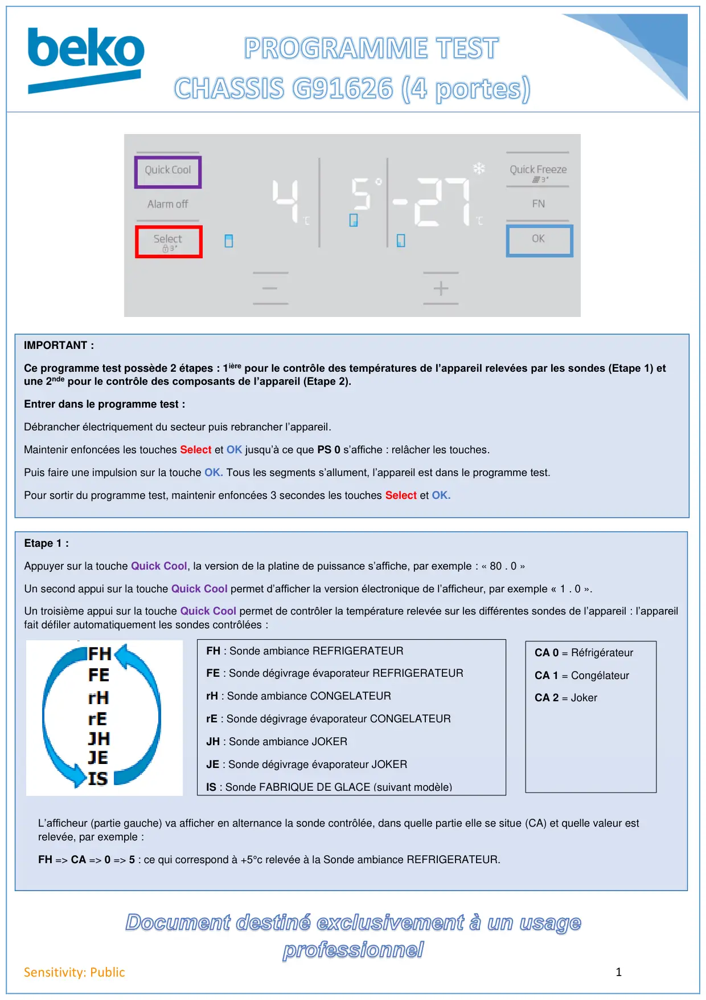
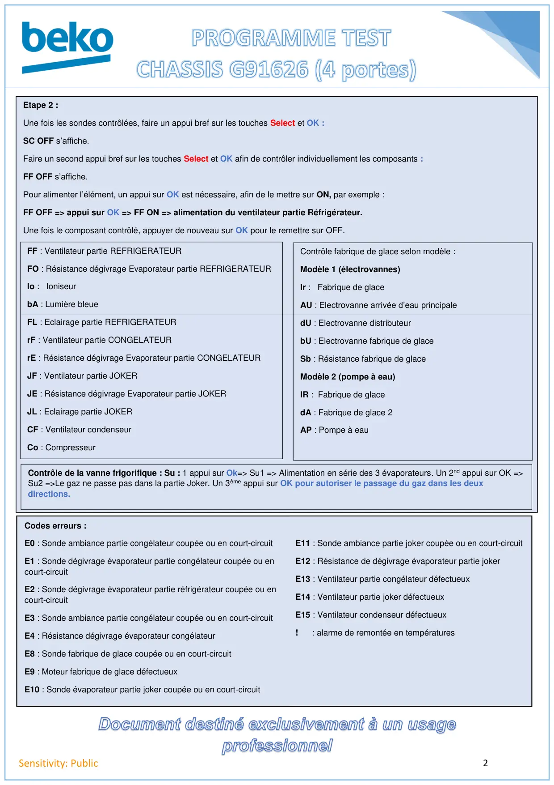

Prog Test REF G91626NL Forever4D (4 Portes)

1Sensitivity: PublicIMPORTANT :Ce programme test possède 2 étapes : 1ière pour le contrôle des températures de l’appareil relevées par les sondes (Etape 1) etune 2nde pour le contrôle des composants de l’appareil (Etape 2).Entrer dans le programme test :Débrancher électriquement du secteur puis rebrancher l’appareil.Maintenir enfoncées les touches Select et OK jusqu’à ce que PS 0 s’affiche : relâcher les touches.Puis faire une impulsion sur la touche OK. Tous les segments s’allument, l’appareil est dans le programme test.Pour sortir du programme test, maintenir enfoncées 3 secondes les touches Select et OK.Etape 1 :Appuyer sur la touche Quick Cool, la version de la platine de puissance s’affiche, par exemple : « 80 . 0 »Un second appui sur la touche Quick Cool permet d’afficher la version électronique de l’afficheur, par exemple « 1 . 0 ».Un troisième appui sur la touche Quick Cool permet de contrôler la température relevée sur les différentes sondes de l’appareil : l’appareilfait défiler automatiquement les sondes contrôlées :FH : Sonde ambiance REFRIGERATEURFE : Sonde dégivrage évaporateur REFRIGERATEURrH : Sonde ambiance CONGELATEURrE : Sonde dégivrage évaporateur CONGELATEURJH : Sonde ambiance JOKERJE : Sonde dégivrage évaporateur JOKERIS : Sonde FABRIQUE DE GLACE (suivant modèle)L’afficheur (partie gauche) va afficher en alternance la sonde contrôlée, dans quelle partie elle se situe (CA) et quelle valeur estrelevée, par exemple :FH => CA => 0 => 5 : ce qui correspond à +5°c relevée à la Sonde ambiance REFRIGERATEUR.CA 0 = RéfrigérateurCA 1 = CongélateurCA 2 = Joker
1 / 2
2Sensitivity: PublicEtape 2 :Une fois les sondes contrôlées, faire un appui bref sur les touches Select et OK :SC OFF s’affiche.Faire un second appui bref sur les touches Select et OK afin de contrôler individuellement les composants :FF OFF s’affiche.Pour alimenter l’élément, un appui sur OK est nécessaire, afin de le mettre sur ON, par exemple :FF OFF => appui sur OK => FF ON => alimentation du ventilateur partie Réfrigérateur.Une fois le composant contrôlé, appuyer de nouveau sur OK pour le remettre sur OFF.FF : Ventilateur partie REFRIGERATEURFO : Résistance dégivrage Evaporateur partie REFRIGERATEURIo : IoniseurbA : Lumière bleueFL : Eclairage partie REFRIGERATEURrF : Ventilateur partie CONGELATEURrE : Résistance dégivrage Evaporateur partie CONGELATEURJF : Ventilateur partie JOKERJE : Résistance dégivrage Evaporateur partie JOKERJL : Eclairage partie JOKERCF : Ventilateur condenseurCo : CompresseurContrôle fabrique de glace selon modèle :Modèle 1 (électrovannes)Ir : Fabrique de glaceAU : Electrovanne arrivée d’eau principaledU : Electrovanne distributeurbU : Electrovanne fabrique de glaceSb : Résistance fabrique de glaceModèle 2 (pompe à eau)IR : Fabrique de glacedA : Fabrique de glace 2AP : Pompe à eauCodes erreurs :E0 : Sonde ambiance partie congélateur coupée ou en court-circuitE1 : Sonde dégivrage évaporateur partie congélateur coupée ou encourt-circuitE2 : Sonde dégivrage évaporateur partie réfrigérateur coupée ou encourt-circuitE3 : Sonde ambiance partie congélateur coupée ou en court-circuitE4 : Résistance dégivrage évaporateur congélateurE8 : Sonde fabrique de glace coupée ou en court-circuitE9 : Moteur fabrique de glace défectueuxE10 : Sonde évaporateur partie joker coupée ou en court-circuitE11 : Sonde ambiance partie joker coupée ou en court-circuitE12 : Résistance de dégivrage évaporateur partie jokerE13 : Ventilateur partie congélateur défectueuxE14 : Ventilateur partie joker défectueuxE15 : Ventilateur condenseur défectueux! : alarme de remontée en températuresContrôle de la vanne frigorifique : Su : 1 appui sur Ok=> Su1 => Alimentation en série des 3 évaporateurs. Un 2nd appui sur OK =>Su2 =>Le gaz ne passe pas dans la partie Joker. Un 3ème appui sur OK pour autoriser le passage du gaz dans les deuxdirections.
2 / 2